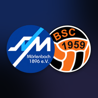

Datenschutz
SV/BSC Sportzentrale, App und Web-App · Stand 29.10.2026Die Sportzentrale ist die interne App der Fußballabteilung des SV Mörlenbach 1896 e.V. für Abteilungsleitung, Trainer, Planer und Betreuer. Sie dient ausschließlich der Organisation des Vereins. Es gibt keine Werbung und kein Tracking.
Verantwortlich
Schulstraße 2, 69509 Mörlenbach
Vereinsregister VR 40269, Amtsgericht Darmstadt
vertreten durch die Abteilungsleitung Fußball
E-Mail: fussball@sv-moerlenbach.de
Welche Daten wir verarbeiten
- Dein Konto: Name, E-Mail-Adresse, Rolle im Verein und ein verschlüsselt gespeichertes Passwort. Ein Konto bekommt nur, wer von der Abteilungsleitung eingeladen wurde.
- Vereinsdaten: Was im Team eingetragen wird, zum Beispiel Kader und Spielerangaben, Termine, Trainings, Aufgaben, Kasse und Partnerschaften. Zweck ist die Organisation des Spielbetriebs und der Abteilung.
- Mitteilungen: Wenn du Mitteilungen einschaltest, speichern wir eine Geräteadresse (Token), damit Hinweise ankommen. Ausschalten geht jederzeit in der App, dann wird das Token gelöscht.
- Technische Angaben: App-Version und Zeitpunkt der letzten Nutzung, damit wir Fehler finden und Updates verteilen können.
- Face ID und Fingerabdruck: bleiben auf deinem Gerät. Die App erfährt nur, ob das Entsperren geklappt hat.
Rechtsgrundlage
Art. 6 Abs. 1 lit. b DSGVO (Mitgliedschaft und ehrenamtliche Mitarbeit im Verein) und Art. 6 Abs. 1 lit. f DSGVO (berechtigtes Interesse an einer geordneten Vereinsorganisation). Für Mitteilungen gilt deine Einwilligung (Art. 6 Abs. 1 lit. a DSGVO), die du jederzeit widerrufen kannst.
Dienstleister
- Supabase (Datenbank und Anmeldung), Rechenzentrum Frankfurt am Main.
- GitHub Pages (Auslieferung der App-Dateien, ohne Vereinsdaten).
- Apple Push Notification Service und Google Firebase Cloud Messaging für Mitteilungen auf dem Handy.
- Resend für E-Mails, zum Beispiel Angebote und Verträge an Partner.
- Anthropic für einzelne KI-Funktionen (zum Beispiel Texte vorschlagen). Dabei wird nur übertragen, was für die jeweilige Funktion nötig ist.
Mit allen Dienstleistern bestehen Verträge zur Auftragsverarbeitung. Bei Dienstleistern außerhalb der EU erfolgt die Übermittlung auf Grundlage des EU-US Data Privacy Framework oder von Standardvertragsklauseln.
Wie lange wir speichern
Solange du im Verein mitarbeitest. Wenn du dein Konto löschst oder die Abteilungsleitung deinen Zugang entfernt, werden Konto und Anmeldung gelöscht. Was du für den Verein eingetragen hast, bleibt ohne deinen Namen erhalten, soweit der Verein es weiter braucht.
Deine Rechte
Du hast das Recht auf Auskunft, Berichtigung, Löschung, Einschränkung der Verarbeitung, Datenübertragbarkeit und Widerspruch. Schreib dafür an fussball@sv-moerlenbach.de. Du kannst dich außerdem beim Hessischen Beauftragten für Datenschutz und Informationsfreiheit beschweren.
Konto löschen
In der App unter Mein Konto › Konto löschen. Zur Sicherheit erst nach Eingabe von „LÖSCHEN“.